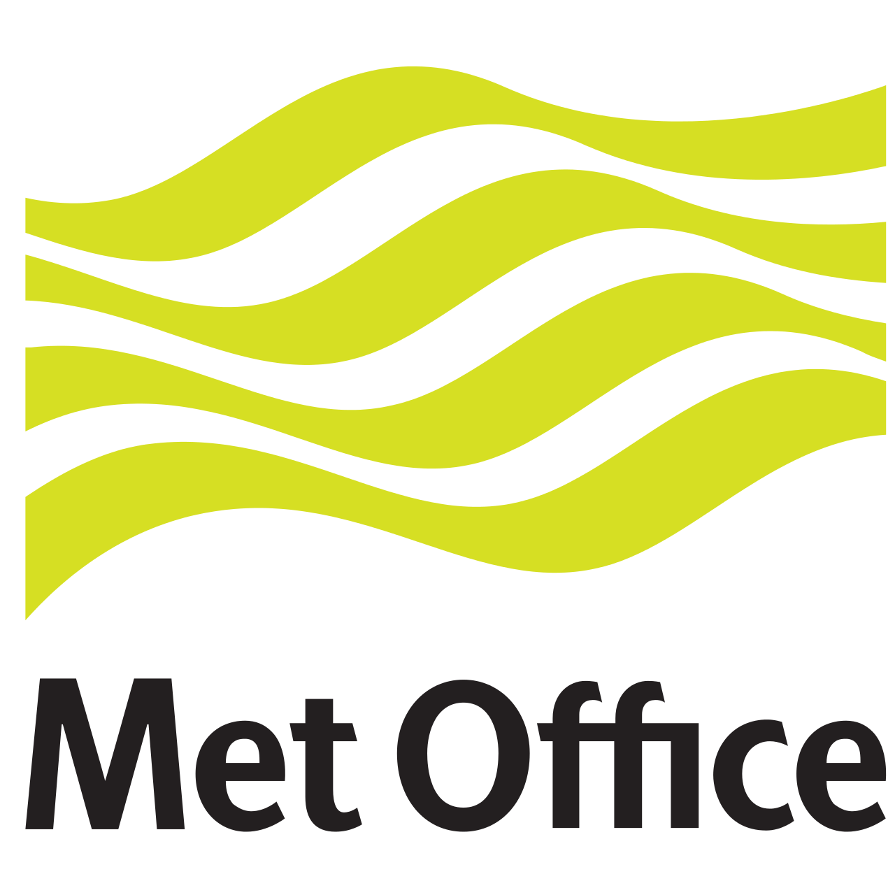

Sadie Bartholomew

Application to the Software Sustainability Institute Fellowship Programme 2022
Who am I?
In one sentence:
Educated in physics, for the past four years I have been working as an effective RSE in the field of climate and weather, under two different roles, contributing widely to open-source software.
Before my career

I completed an Integrated Masters in Physics at Durham University. There:
- I first learnt to program (
Hello World!), in the language I still use above all today, Python; a final-year project in computational particle physics using C++ activated my interest in software for research, openness of research artefacts and HPC.
My first software role

My first step onto the RSE career ladder was to join the Met Office as a Scientific Software Engineer.
I spent two years in that role contributing to open-source Python-based infrastructure libraries used to configure and run models for both operational forecasting and research.
My next, and present, software role
For approaching two years I have been working as a Computational Scientist for the Computational Modelling Services (CMS) group within the National Centre for Atmospheric Science (NCAS), based at the Department of Meteorology at University of Reading.


Furthermore
I enjoy contributing to open-source software in a personal capacity, for example:
- as a volunteer reviewer for the Journal of Open Source Software;
- with annual completion of the Hacktoberfest initiative (2018+);
by developing and publicising personal coding projects such as
creative-matplotlibandocean-chroma-theme.

What do I do in my current role?
TODO.
What are my plans for the fellowship?
TODO.
Thank you for your consideration
These slides were written in org-mode for Emacs and exported to
reveal.js using the org-reveal tool.
The corresponding code and content is all contained in a private GitHub repository which I will make public and share if I am selected for a fellowship (I could even use it as part of a feature on presentation prepartion in the "To be an RSE" videos).
To learn more about me, please see my:
- GitHub, user @sadielbartholomew
- ORCID, iD 0000-0002-6180-3603
- ResearchGate, handle Sadie-Bartholomew
- personal website, sadielbartholomew.github.io/
- repository with my CV, talks archive, dotfiles, etc., github.com/sadielbartholomew/sadielbartholomew
- SSI profile, www.software.ac.uk/sadie-bartholomew